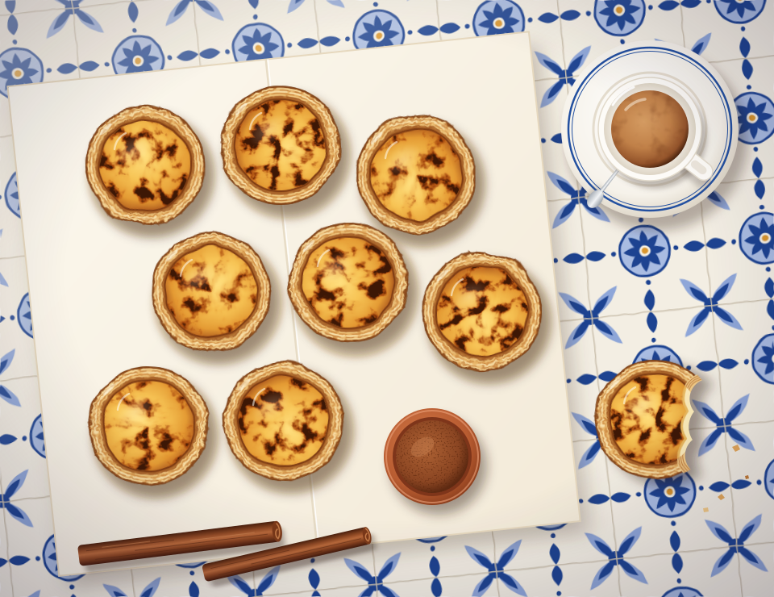

“The ‘hot as it will go, then ten minutes more’ line changed everything. First batch with proper leopard spots. My Lisbon-born mother-in-law asked for the recipe, which has never happened before.”
MR
Marta R.Toronto · baked 3 times
Portuguese custard tarts, at home
Shatter-crisp spirals of pastry, a barely set lemon-and-cinnamon custard, and the blistered, burnt-sugar tops that make Lisbon’s custard tart worth an afternoon of your time.

Every morning in Belém the queue starts before the shutters go up. It moves quickly, because nobody orders just one, and it ends in a paper bag gone translucent at the corners, a shaker of cinnamon on the counter, and the particular silence of people eating something slightly too hot to eat.
The pastel de nata is a simple thing made of difficult parts. There is a laminated pastry, rolled into a tight log so that every slice becomes a spiral, then thumbed thin into a tin. There is a custard thickened just enough to hold, scented with lemon peel and a cinnamon stick. And there is an oven so hot that the top blisters and scorches in the time it takes the pastry to shatter.
“Your oven is the recipe. Turn it up as far as it will go, then give it another ten minutes.”Marta Sobral
This is the version we have baked most weekends since our first trip to Lisbon: tested in four home ovens, two of which we are no longer allowed to use. It takes an afternoon, mostly of waiting, and the pastry is happiest made the night before. The custard comes together in ten minutes while the oven heats.
You don’t need special tins. A standard 12-hole muffin tin works; the tarts will be a little wider and shallower than the ones in Rua de Belém, and nobody at your table will mind.
In a stand mixer fitted with the dough hook, mix the flour, salt and cold water on low for about 30 seconds, until a soft, shaggy dough forms. It should be stickier than bread dough. Scrape it onto a well-floured surface, pat it into a square and let it rest under a tea towel for 15 minutes.
Roll the dough into a 45 cm square. Dot a third of the butter over the left two-thirds and spread it thin with an offset spatula, leaving a 2 cm border. Fold the bare third over the middle, then the buttered left third over that, like a letter. Turn 90°, roll out again into a long rectangle and repeat with the second third of butter.
Roll the dough out once more to about 45 × 50 cm and trim the edges straight. Spread the last of the butter over the whole surface, then roll it up tightly from the short end into a log about 5 cm across. Wrap and chill for at least 2 hours, or overnight.
Put the sugar, water, cinnamon stick and lemon peel in a small pan. Bring to the boil without stirring and cook until it reads 100°C on a sugar thermometer, about 3 minutes. Take it off the heat and leave the aromatics in.
Whisk the flour with 60 ml of the milk until smooth. Scald the remaining milk in a saucepan, then whisk it into the flour mixture and return everything to the pan. Cook, whisking constantly, for 2 minutes until it coats the back of a spoon.
Remove the cinnamon and lemon from the syrup and pour it into the milk in a thin stream, whisking all the while. Stir in the vanilla and let it cool until just warm to the touch.
Whisk the egg yolks into the warm custard base, then strain through a fine sieve into a jug. You’ll have about 600 ml: just enough for twelve generous tarts. The custard keeps, covered, for a day in the fridge.
Put a heavy tray on the top shelf and heat the oven to its highest setting, ideally 290°C (550°F). Cut the cold log into twelve 2 cm discs and drop each one, cut side up, into a cup of the tin.
Dip your thumbs in cold water and press into the center of each spiral, then work the pastry out and up the sides until it sits just proud of the rim. The base should be thinner than you think.
Fill each shell three-quarters full with custard. Set the tin directly on the hot tray and bake for 12 to 15 minutes, until the pastry is deep golden and crisp and the tops have puffed and blistered with dark, almost burnt spots.
Leave the tarts in the tin for 5 minutes, then lift them onto a rack. The custard will sink a little as it sets. Serve warm with cinnamon and icing sugar on the table, ideally with a bica and nowhere else to be.
Four things we learned the hard way, so you don’t have to.
Home ovens rarely pass 260°C. Preheat a heavy tray or pizza steel on the top shelf for a full 30 minutes and bake directly on it.
The butter should spread like mayonnaise; the dough should stay cool. If either fights you, both go back in the fridge for 15 minutes.
A thick base turns soggy. Aim for pastry you can almost see through at the bottom and a lip that stands just above the tin.
Pastéis de nata are at their best the day they are baked. Re-crisp leftovers in a 200°C oven for 4 minutes; never the microwave.
“The ‘hot as it will go, then ten minutes more’ line changed everything. First batch with proper leopard spots. My Lisbon-born mother-in-law asked for the recipe, which has never happened before.”
Made the log on Friday night, baked on Sunday morning. The spiral diagram is what finally made lamination click for me.
Muffin tin worked fine. I used the grill for the last two minutes as suggested; the tops blistered beautifully but watch them like a hawk.
84,000 cooks read it with their first coffee. No ads, no algorithm, and an easy way out.